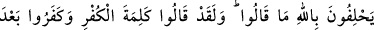
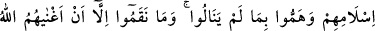
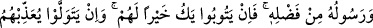
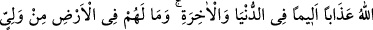
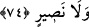

etmesini Allah Teâlâ’dan niyaz ederiz.
74. Söylemediklerine dair Allah’a yemin ediyorlar. Halbuki o küfür sözünü
söylediler, müslüman olduktan sonra inkar ettiler, başaramadıkları bir şeye
yeltendiler. Onlar, Allah ve Rasûlü’nün, Allah’ın lutfiyle kendilerini zengin
etmesinden başka bir şeyi kerih görmediler. Eğer tevbe ederlerse kendileri için
daha iyi olur. Yok eğer yüz çevirirlerse Allah onlara dünyada da, âhirette de acı bir
biçimde azab edecektir. Yeryüzünde onların ne dostu, ne de yardımcısı vardır.
Rivayet edildiğine göre Rasûlullah (s.a.)’in Tebük seferi iki ay sürmüştür. Bu süre
zarfında Kur’ân âyetleri de inmeye devam ediyor ve inen bu âyetler savaşa katılmayan
münâfıkları ayıplıyordu. Peygamber (a.s.) ile beraber olan münâfıklar da bunları
işitiyorlardı. Bunlardan biri olan Cülâs b. Süveyd: “Eğer Muhammed’in geride
(Medine’de) bıraktığımız kardeşlerimiz hakkında -ki onlar bizim büyüklerimiz ve ileri
gelenlerimizdir- söyledikleri gerçek ise biz eşeklerden daha beteriz.” demişti. Orada
bulunan ve Ensar’dan olan Âmir b. Kays, Cülâs’a: “Evet, vallâhi Muhammed doğru
söylüyor ve sen de eşekten betersin.” demişti. Bu tartışma Rasûlullah’a ulaştı.
Bunun üzerine Rasûlullah (s.a.) Cülâs’ı huzuruna getirtti. Cülâs öyle bir şey
söylemediğine dair Allah’a yemin etti. (İftiracı durumuna düşen) Âmir ellerini kaldırdı
ve: “Ey Allah’ım! Kulun ve Peygamberin olan Muhammed’e, doğru söyleyeni tasdik
edecek ve yalan söyleyeni de tekzib edecek bir âyet indir.” diye duâ etti.
Rasûlllah (s.a.) ve orada bulunan müminler, Âmir’in bu duâsına “âmîn” dediler. Onlar
henüz oradan ayrılmamışlardı ki Cibrîl bu âyeti indirdi.[206]
Bu sözü söyleyen yalnızca Cülâs olduğu halde âyette “söylemediklerine dâir Allah’a
yemin ediyorlar” denilerek çoğul sîgası kullanılmıştır. Çünkü Cülâs’ın dışındaki diğer
münâfıklar onun sözüne rıza gösterip ses çıkarmadıkları için onlar da bu sözü söyleyen
kişinin durumuna düşmüşlerdir.
“Halbuki” biraz önce sözü edilen “o küfür sözünü söylediler. Müslüman olduktan
sonra inkâr ettiler.” Yani açıkça müslüman olduklarını söyledikten sonra, kalplerindeki
küfrü ortaya koydular.
“Başaramadıkları bir şeye yeltendiler”. Yani, başarılı olamadıkları Peygamber